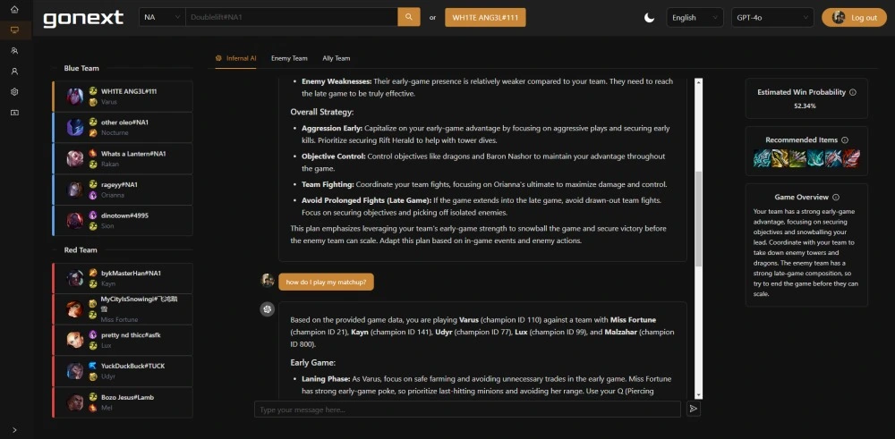

I'm a software engineer dedicated to human-centered artificial intelligence, specializing in natural language processing (NLP) and intuitive user interface (UI) design. My passion lies in crafting interactive experiences enhanced by intelligent systems.
Currently, I work at
Stellar Cyber, developing AI-driven solutions for threat hunting and human-augmented autonomous cybersecurity operations powered by agentic AI. Additionally, I'm the creator of
GONEXT, a generative AI tool providing personalized, game-specific analytics
for League of Legends players.
Outside of work, I am either raving, backpacking, or working out. My favorite artist is Subtronics, and my favorite country I've visited is Peru.
Current Work
An AI-powered analytics tool for League of Legends that provides
real-time, personalized strategies, matchups, synergies, and builds.
It uses the Riot API to gather live game data, which is then
processed by language models to deliver tailored, game-specific
guidance to players.

{kind=link}